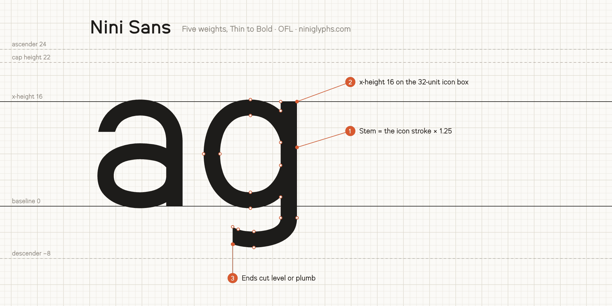
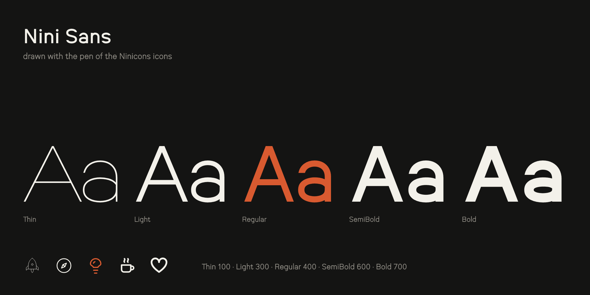
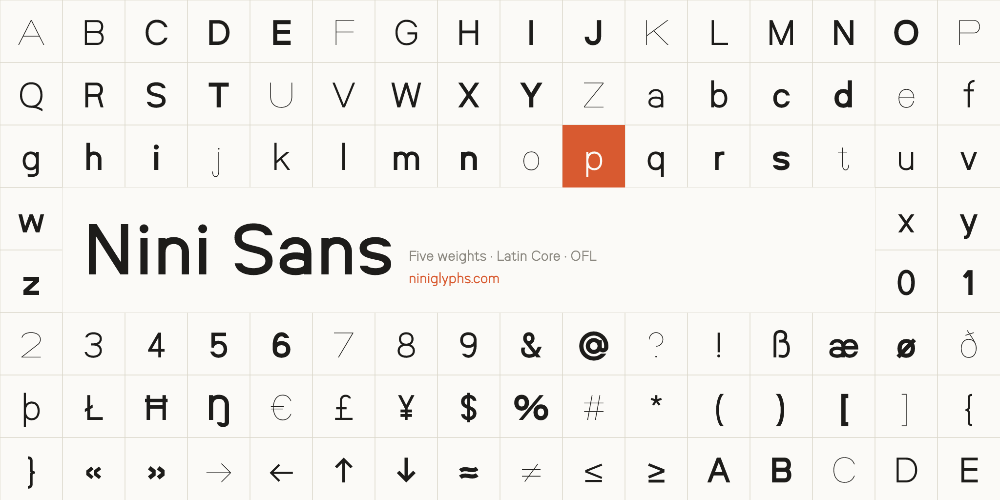

Nini Sans is a grotesk drawn with the pen of Ninicons, an open-source icon set, so that text and icons read as one system. Its five weights, Thin, Light, Regular, SemiBold and Bold, carry the icon strokes 0.5, 1.5, 2, 2.5 and 3 scaled by 1.25, so a 20 px icon sets right beside 16 px text of the same weight.

The em is the 32-unit icon box. Capitals stand on the square keyline (22 units), ascenders reach the circle keyline (24) and the x-height is 16, Helvetica's proportion to the capitals; at 16 px every one of these falls on a whole pixel. Bowls are slightly squared ovals, terminals are cut level or plumb as Helvetica's and Geist's are, the a is double-storey and the g single-storey, and the t's foot is the j's hook turned round.

Widths, spacing and kerning were fitted against Helvetica and Geist together. Figures are proportional by default, with tabular figures and currency signs for columns. The character set covers Google Fonts' Latin Core (Western, Central and Eastern European languages, Romanian, Welsh, Turkish and more), with combining marks that land where the precomposed letters have them.

To contribute, see github.com/niniglyphs/nini-sans.